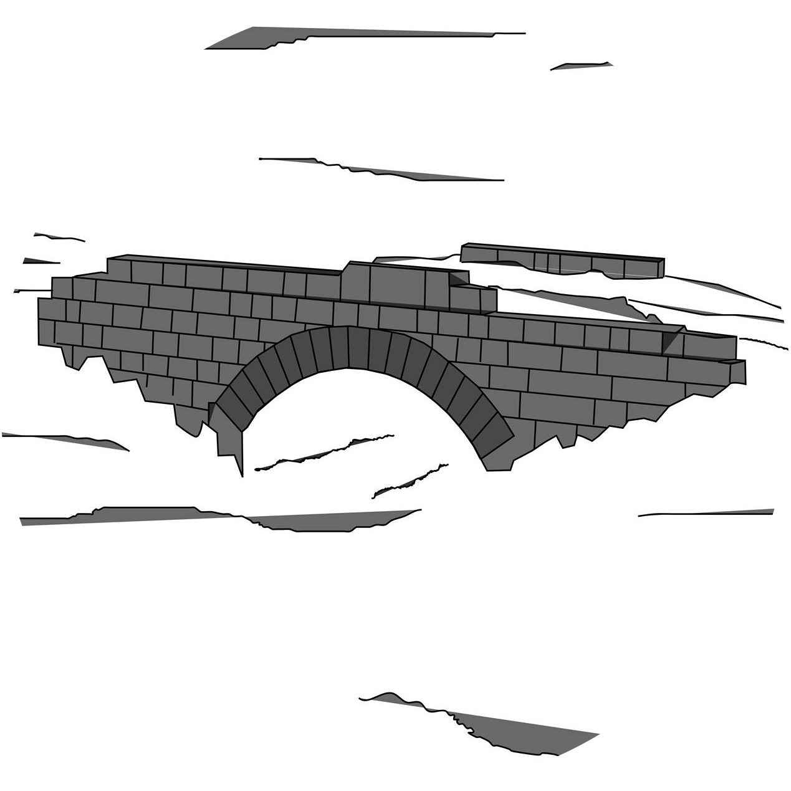

ΟΙ ΠΡΟΣΦΥΓΕΣ ΤΟΥ 1922 ΣΤΗ ΦΛΩΡΙΝΑ
Σχετικά
Αφορά τους πρόσφυγες που ήρθαν εξ Ανατολών (Ανατολική Θράκη,
Ανατολική Ρωμυλία, Μικρά Ασία, Πόντο, Ρωσία), λίγο πριν ή λίγο μετά το
1922 και εγκαταστάθηκαν μέχρι το 1928 σε οικισμούς που ανήκουν σήμερα
στην Περιφερειακή Ενότητα Φλώρινας.
Τα δεδομένα της εφαρμογής για τους πρόσφυγες που αποκαταστάθηκαν
αγροτικά προέρχονται από το Ονομαστικόν Ευρετήριον Αγροτών Προσφύγων,
ενώ αυτά που αφορούν όσους αποκαταστάθηκαν αστικά, στις πόλεις της
Φλώρινας και του Αμυνταίου, αντλήθηκαν από το αρχείο της Διεύθυνσης
Δημόσιας Υγείας και Κοινωνικής Μέριμνας Φλώρινας.
Έρευνα
Το σώμα των
δεδομένων συγκροτήθηκε από τον Γιάννη Κασκαμανίδη, μέλος Ε.Δι.Π. του
Τμήματος Δημοτικής Εκπαίδευσης Φλώρινας.
 Ανάπτυξη
Ανάπτυξη
Η εφαρμογή «Οι πρόσφυγες του 1922 στη Φλώρινα», αναπτύχθηκε από
τον Ιάσονα Κασκαμανίδη, φοιτητή του 3ου έτους του Τμήματος Πληροφορικής
του Δι.Πα.Ε. με τη χρήση των γλωσσών προγραμματισμού… και των
εφαρμογών …
 Βοήθεια
Βοήθεια
Η περιήγηση στη σελίδα μπορεί να γίνει με δύο τρόπους: από τα μενού ή
με αναζήτηση.
Κάνοντας μια επιλογή από τα μενού «Περιοχή προέλευσης» ή «Δήμος
εγκατάστασης» εμφανίζονται τα αντίστοιχα αποτελέσματα.
Στο πεδίο αναζήτησης με κενό διάστημα (space bar) εμφανίζεται πλήρης
λίστα των προσφύγων της Π.Ε. Φλώρινας
Πληκτρολογώντας έναν όρο, π.χ. επώνυμο, οικισμό ή περιοχή
προέλευσης, οικισμό ή δήμο εγκατάστασης, πατρώνυμο/όνομα συζύγου,
είδος εγκατάστασης (αγροτική, αστική), λαμβάνετε τα αντίστοιχα
αποτελέσματα.
Πιέζοντας επάνω σε κάθε ονοματεπώνυμο αναδύεται η καρτέλα του
πρόσφυγα με όλα τα σχετικά με αυτόν δεδομένα, καθώς και χάρτη στον οποίο
σημειώνονται ο οικισμός προέλευσης και ο οικισμός εγκατάστασης.